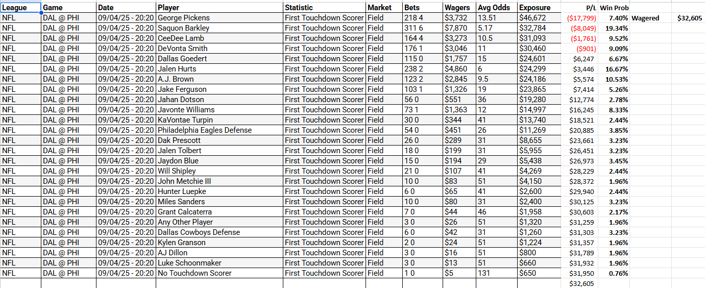
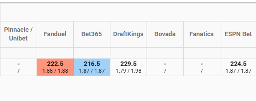
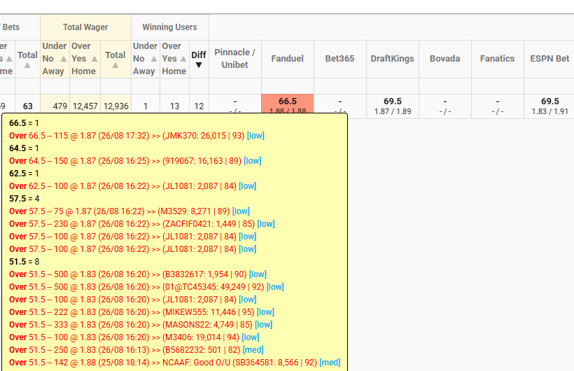
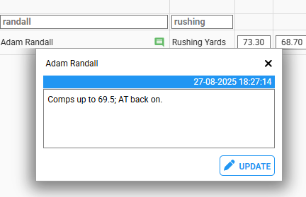
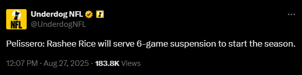
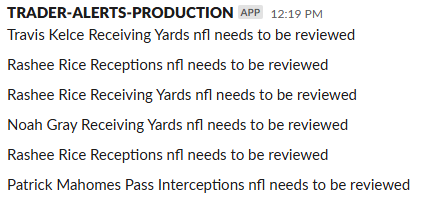
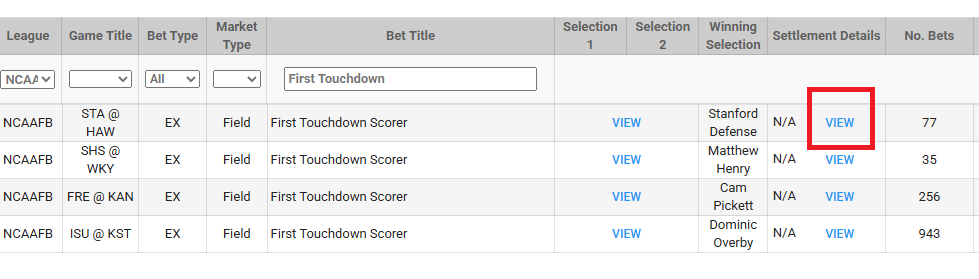
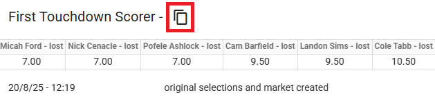

NFL & NCAAF Guide
TRADING NOTES:
- We have a DST Twitter account to monitor player news and updates for all sports. Make sure you log into the account and have notifications turned on for Twitter in your browser to see the updates.
- Username: dsttraders
- Password: Traders2023
- For yards markets (passing, rushing, or receiving), we can be aggressive and move the line anywhere from 3-5 yards for rushing or receiving, or 5+ yards for passing yards when we get sharp or winning group activity.
- Price moves are generally recommended for the lower end stats (receptions, completions, sacks). If we get continued activity after a price move, move the line up or down one.
- During trading, make sure to use the Time Based O/U and Time Based Bet Exposure reports. These reports are very helpful during busy trading hours to see growing exposures and any rushes on specific players or markets..
- If exposure is growing for a touchdown or First TD market, you can put a price override for that player (in the ORR for touchdowns, or in the Pending Market Report for First TDs). However, please also check comps using Optic as we don’t want to be unfairly low versus the marketplace.
- For prime time or standalone games, we want to monitor First Touchdown market exposure. To do this, filter for that market and game in the Bet Exposure Report. Then paste that data into the First TD Exposure sheet. This will show you which players we have large exposures on and where we might need to shorten prices.
- Sometimes when pasting into the Google Sheet the top player will repeat for some reason. If it does, go back to the Bet Exposure Report and recopy the info then paste it back into the Sheet.

- For NCAAF yards markets specifically, we will often get lots of one sided activity even after moving lines above or below comps. When this activity occurs, try to look up some information about the player or team. News about these NCAAF players is not as readily available as for pro sports leagues. Utilize the links below, search Twitter (X) for more information, or try to find the local newspaper or TV station that might cover the team.
- There are often some big differences between comps for football, more so than other sports like baseball or basketball. The below example is a passing yards market for NCAAF.
- On auto trading, our system will set a median line between these comps. As with other sports, follow winning and noted sharp activity to make adjustments.
- If a client mentions a specific comp (such as 365 in the below example), we can make an adjustment if we don’t have significant winning activity the other way. But make sure to note to the client that other comps have vastly different projections for that market and there is no consensus amongst major comps.

- If we get a winning user group on a market, take the market off AT and adjust the line. But often comps will later adjust and we will want to put AT back on. Periodically during trading, review the markets with AT disabled to see which ones can be put back on AT after comps have updated.
- In this example, we received winning over activity at 51.5. Comps later moved up into the high 60s.
- Turn AT back on, and leave a note so the next trader knows why the market is on AT with so many winning users.


GENERAL NOTES:
- Make sure to have the DST Traders Twitter (X) account open during your shift and notifications on. We follow accounts like Underdog NFL and RotoWire CFB that provide player news and updates.
- Also make sure to always have Slack open, and have alerts turned on for #sharp_bets channel. If we see alerts about lines that need to be reviewed - especially multiple alerts for the same player or players on the same team - there could be breaking news about that player or team and we might need to pull the team until we know more or comps update.
- Also keep in mind custom markets like First TD (NFL & NCAAF), most yards (NFL), or player longest yards (NFL prime time games) markets. These might need to be temporarily pulled if a major player is out or there is a change in role for key players.
- In this example - there was a Tweet about Rashee Rice being suspended, and then minutes later an alert that Rice and other Chiefs players lines needed to be reviewed, as comps had pulled them temporarily.


FOOTBALL MARKET CS:
- For both live stats and to view the official gamebooks for the NFL, use the NFL GSIS website (username and password: media).
- Oftentimes players will participate in the game but not record any stats. We need to check the official gamebooks to verify that the player did play. Use the GSIS site for NFL; for NCAAF go to the websites of the individual teams to view the participation reports within the boxscore (these are not currently available on the official NCAA website).
- We will get many inquiries about quarterback touchdowns. Passing touchdowns are different from touchdowns (also known as Anytime Touchdown Scorer markets).
PLAYER X did not score a touchdown in this game. Passing touchdowns do not count for this stat and are offered as a separate market for QBs. From our FAQs:
FOR AMERICAN FOOTBALL, WHAT IS THE DEFINITION OF THE TOUCHDOWNS STATISTIC?
A touchdown is credited to any player who carries or receives the ball in the end zone (ie. on a passing touchdown, the receiver is credited with a touchdown.). Passing Touchdowns in a separate market.
- When a backup scores the first touchdown, we often get emails asking for the list of players that were offered in the market. This can be checked in the Settlement Report by clicking VIEW in the settlement details. You can share this information with clients by clicking on the copy icon which will add the full listings to your clipboard.
- We will also get emails if there is a special teams touchdown for First TD. Users will think the team defense should be the winner, but it is Any Other Player.
- If you are unsure what the correct grade is, post in NFL Slack channel for review.


- Winning selections for First TD market will fall into one of four categories:
- Listed offensive player - i.e. where the player who scored first was listed as an individual selection
- Team Defense - i.e. where the player who scored first was playing on defense for the listed team when they scored. Please note that Defense does not include touchdowns scored by Special Teams.
- Any other player - i.e. where the player who scored first does not fit into either of the first two categories. Please note this category includes touchdowns scored by players on Special Teams who aren't individually listed.
- No Touchdown Scorer - i.e. where no touchdown is scored in the game.
CUSTOM MARKET SETTLEMENTS:
- For NFL and NCAAF, we have a lot of custom markets that need to be settled manually. The most important one is First Touchdown.
- NCAAF First Touchdown:
- We need to wait until the game is over and the game stats have been finalized to settle all players. You should check either school’s website to find a participation report.
- If a player played, he’s settled as won/loss. If a player did not play (not just didn’t record a stat), that player should be voided.
- You can settle the winner as soon as we know while waiting to settle the rest.
- Settlement is done in the Pending Market Report.
- We can start settling during the game. The winner should be settled within a few minutes of the first touchdown.
- If you know for sure a player is playing based on the boxscore, you can start settling them as loss.
- If a player did not play (not just didn’t record a stat), that player should be voided.
- Use the Participation table on page one of the NFL boxscore to see who played. Boxscores can be found at NFLGSIS.com (media/media is the login).
- Settlement is done in the Pending Market Report.
- Settle after the game in the Pending Market Report.
- Use official boxscore from NFLGSIS to get the stats
- Double check before settling each market and ask in slack if you are unsure how to settle.